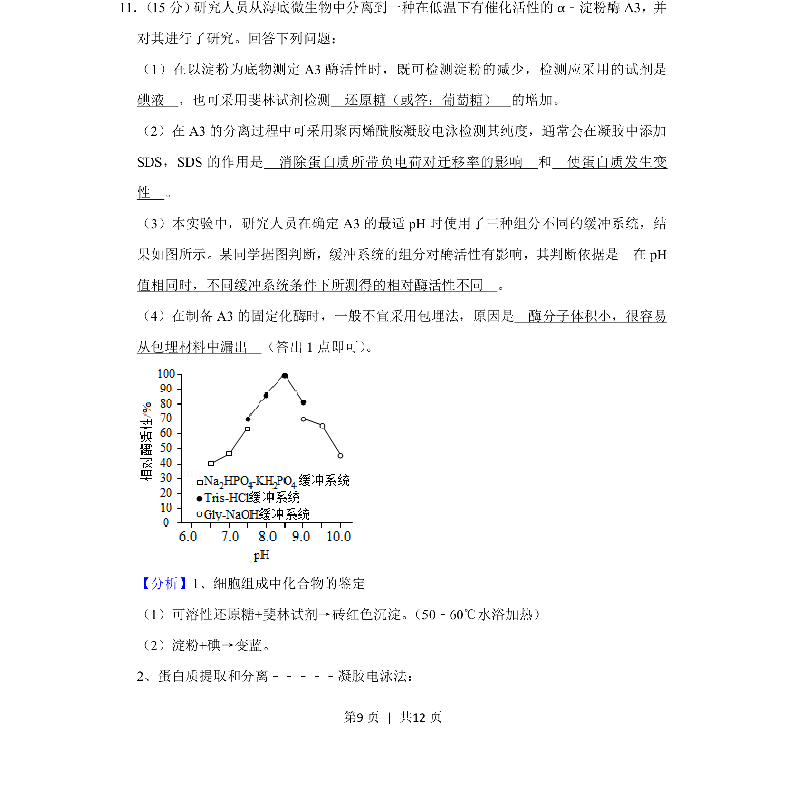
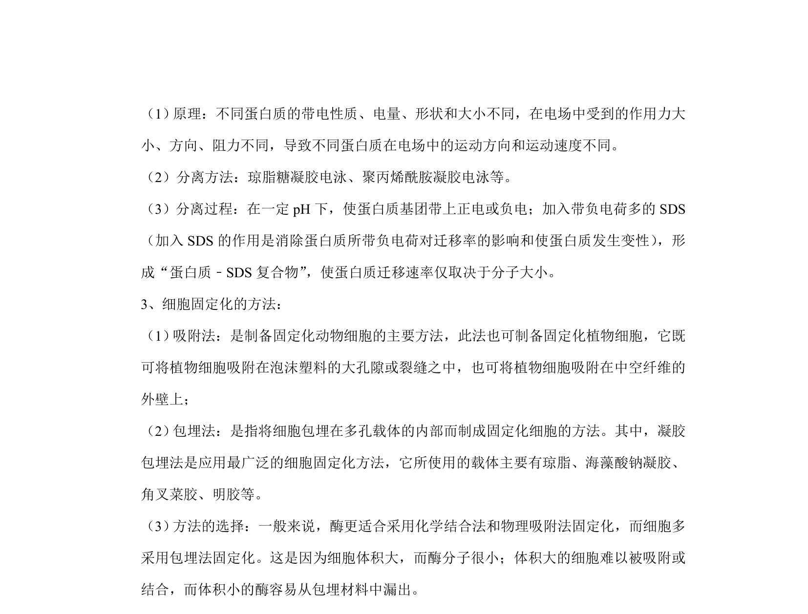
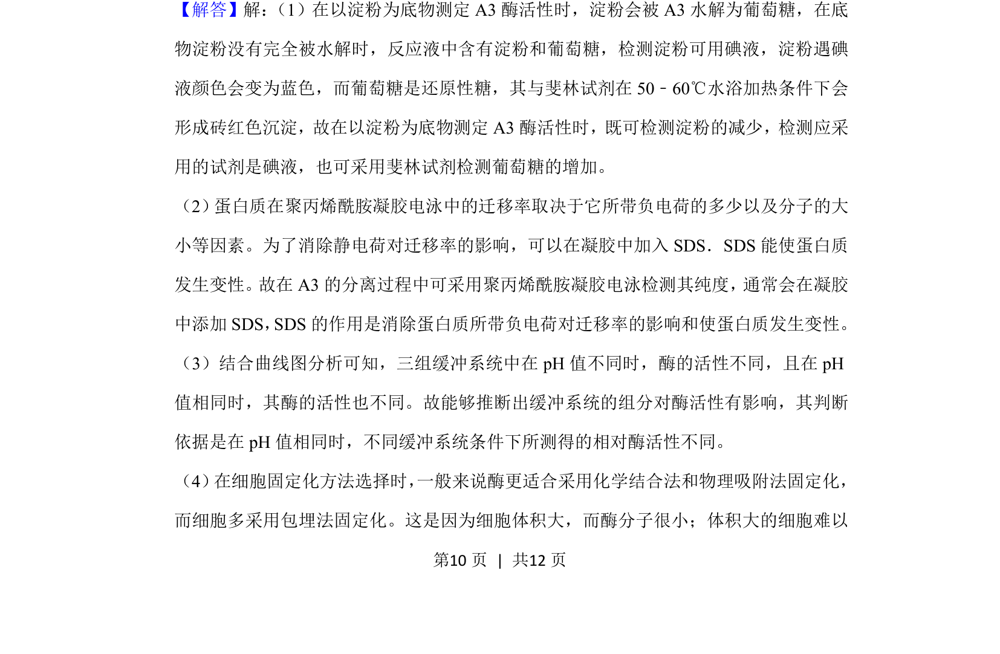
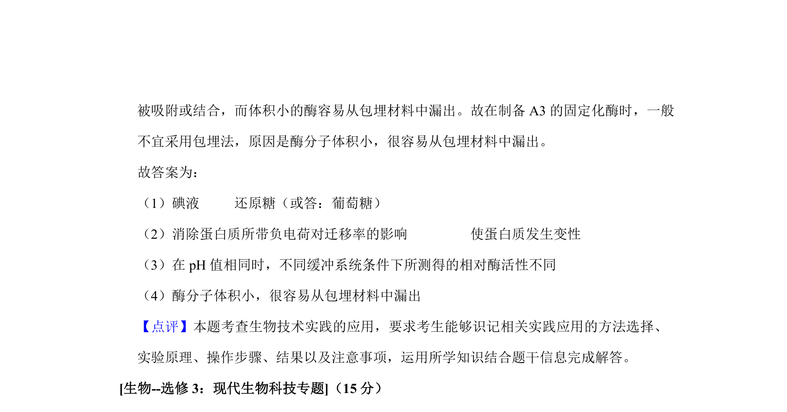

考点：酶活性检测 SDS-聚丙烯酰胺凝胶电泳 酶的最适pH 固定化酶


该题考查酶活性测定、蛋白质电泳、最适pH及固定化酶等综合实验分析。


📄 原 PDF 第 9 页：
素材/真题/吉林/2008-2024·（吉林）生物高考真题/2020年高考生物试卷（新课标Ⅱ）（解析卷）.pdf
11． （15分） 研究人员从海底微生物中分离到一种在低温下有催化活性的α﹣淀粉酶A3，并 对其进行了研究。回答下列问题： （1）在以淀粉为底物测定A3酶活性时，既可检测淀粉的减少，检测应采用的试剂是 碘液 ，也可采用斐林试剂检测 还原糖（或答：葡萄糖） 的增加。 （2）在A3的分离过程中可采用聚丙烯酰胺凝胶电泳检测其纯度，通常会在凝胶中添加 SDS，SDS的作用是 消除蛋白质所带负电荷对迁移率的影响 和 使蛋白质发生变 性 。 （3）本实验中，研究人员在确定A3的最适pH时使用了三种组分不同的缓冲系统，结 果如图所示。某同学据图判断，缓冲系统的组分对酶活性有影响，其判断依据是 在pH 值相同时，不同缓冲系统条件下所测得的相对酶活性不同 。 （4）在制备A3的固定化酶时，一般不宜采用包埋法，原因是 酶分子体积小，很容易 从包埋材料中漏出 （答出1点即可） 。
【分析】1、细胞组成中化合物的鉴定 （1）可溶性还原糖+斐林试剂→砖红色沉淀。 （50﹣60℃水浴加热） （2）淀粉+碘→变蓝。 2、蛋白质提取和分离﹣﹣﹣﹣﹣凝胶电泳法：